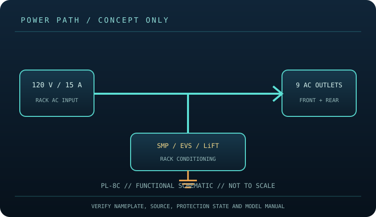

[ SURGE PROTECTIVE DEVICE // STATIC REFERENCE ]
Furman PL-8C Power Conditioner
Rackmount 120 V / 15 A conditioner with nine outlets and SMP, EVS and LiFT technologies; no joule rating stated in the cited model specification. This record describes the named model only; verify nameplate, region, revision, approvals and current manufacturer instructions before deployment.

SAFETY SCOPE: Surge protective devices do not provide outage runtime, guarantee protection from every event, repair defective grounding, or replace qualified electrical installation. Capacity and topology below are based on the cited product literature; where a value is not published, it is not guessed.
Model specifications and topology
| Manufacturer / exact model | Furman PL-8C — named North American model; revisions and region-specific suffixes must be checked on the actual label. |
|---|---|
| Class / topology | Rackmount power conditioner with Series Multi-Stage Protection (SMP), Extreme Voltage Shutdown (EVS) and Linear Filtering Technology (LiFT). This is AC conditioning/surge protection, not an UPS; there is no battery runtime. |
| Electrical capacity | 120 V AC nominal service, 15 A maximum, nine AC outlets (eight rear plus one front per model information) and rack-mount form. Verify the exact nameplate and available circuit capacity before loading. |
| Surge rating | Furman specifies 15 A service and its SMP surge protection, EVS extreme-voltage shutdown and LiFT filtering. The cited specification does not provide a joule-energy value, so none is inferred. |
| Outlets / connection interface | Nine AC outlets: eight rear-panel outlets and one front outlet; rack ears and retractable rack lights are model features. No battery or network management is listed. Confirm outlet switching/group behavior and plug compatibility against the manual. |
| Compatibility | Grounded 120 V AC rack/audio/AV equipment whose combined demand is within the 15 A total rating and the upstream branch circuit. EVS can disconnect output during overvoltage; do not use this behavior as a substitute for correctly rated equipment or a stable source. |
| Battery / runtime | No battery or stored-energy runtime. This product cannot ride through an outage; connected loads lose power when the source or device disconnects. |
| Monitoring / lifecycle | Use only the model’s labeled indicators, alarm, breaker or status display. These features are not proof of building-ground integrity; check manufacturer replacement/failure instructions. |
| Installation / revision control | Read the full model-specific manual and nameplate before installation. Match voltage, phase, current, connector, signal-line type, enclosure rating, revision and approvals; similar product-family names are not evidence of interchangeability. |
Compatibility and application
Grounded 120 V AC rack/audio/AV equipment whose combined demand is within the 15 A total rating and the upstream branch circuit. EVS can disconnect output during overvoltage; do not use this behavior as a substitute for correctly rated equipment or a stable source.
Rackmount power conditioner with Series Multi-Stage Protection (SMP), Extreme Voltage Shutdown (EVS) and Linear Filtering Technology (LiFT). This is AC conditioning/surge protection, not an UPS; there is no battery runtime.
Confirm the equipment input-voltage range, connector type, circuit capacity and signal path from both equipment manuals. A higher joule number does not increase the permissible connected load and does not, by itself, define clamping behavior or protection lifetime.
Safety, inspection and limits
- Install securely in a rack with ventilation and service access; avoid obstructing airflow or loading the rack beyond its rating. Maintain the protective earth path, do not exceed 15 A, and do not daisy-chain conditioners. Unplug before rack servicing; never open energized equipment.
- Inspect cord, chassis, rack retention, outlets, indicator/readout and lighting. Treat persistent EVS shutdown, unusual heat or a damaged enclosure as a fault; follow Furman’s model manual rather than repeatedly resetting or bypassing protection.
- Surge protection reduces specified transient exposure but cannot guarantee equipment survival from lightning, wiring faults, sustained overvoltage or every conducted path. Follow the model manual and applicable electrical code.
Manufacturer sources and safety references
- Furman — PL-8C product pageManufacturer specification page for PL-8C power and protection features.
- Furman — PL-8C owner’s manual (PDF)Model-specific electrical, rack installation and safety directions.
- NFPA — NFPA 70 (National Electrical Code)Electrical installation and grounding requirements depend on the adopted local code.